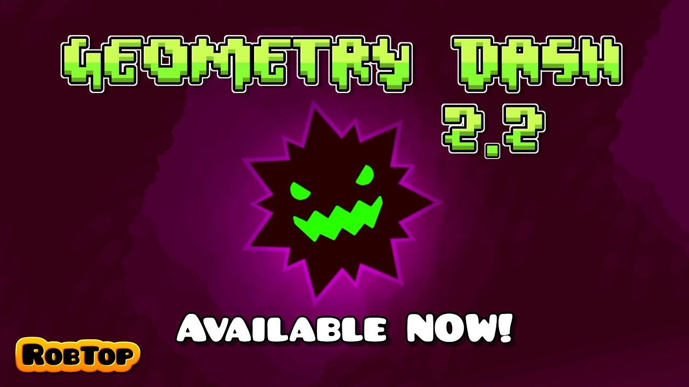

Geometry Dash
Geometry Dash — це ритмічна платформер-гра, розроблена Робертом Топала (RobTop Games). Гравець керує кубиком, що рухається автоматично, уникаючи перешкод у синхронізації з музикою. Вперше гра вийшла у 2013 році, і з того часу здобула величезну популярність серед геймерів по всьому світу.
Геймплей
Гравець керує фігуркою (зазвичай кубиком), яка автоматично рухається вперед. Завдання — стрибати, уникати перешкод, змінювати гравітацію, перетворюватися в інші форми (корабель, м'яч, хвиля тощо), синхронізуючись з музикою рівня.
Музика
Музика грає важливу роль. Рівні синхронізовані з ритмом саундтреку. У грі використовується електронна музика від таких виконавців, як DJVI, F-777, Waterflame та інших.
Рівні
Є офіційні рівні від розробника та редактор рівнів, що дозволяє гравцям створювати й ділитися своїми. У спільноті створено мільйони фанатських рівнів, багато з яких дуже складні.
Складність
Geometry Dash відома своєю високою складністю — навіть перші рівні можуть бути непростими для новачка. Прогрес базується на повторенні і вдосконаленні навичок.


Режими гри:
Є основна платна версія гри (Geometry Dash), а також безкоштовні версії з обмеженою кількістю рівнів:
- Geometry Dash Lite
- Geometry Dash Meltdown
- Geometry Dash World
- Geometry Dash SubZero
Оновлення
Найдовшеочікуванішим оновленням була версія 2.2, яку гравці чекали з 2017 року. Вона принесла нові механіки, камеру, персонажів, рівні та покращення для редактора рівнів.
Цікаві факти:
- 🔹Geometry Dash не має внутрішніх покупок, окрім купівлі повної версії.
- 🔹У грі є таємні монети, які відкривають нові рівні або досягнення.
- 🔹Найскладніші фанатські рівні класифікуються як Demon (особливо Extreme Demon).
- 🔹Є велика спільнота на YouTube, Discord, Reddit, де створюються рівні, гіди, проходження тощо.
🧱 Більше 100 мільйонів користувацьких рівнів
Гравці створили понад 100 млн унікальних рівнів через вбудований редактор. Деякі з них навіть стали культовими — наприклад, "Bloodbath", "Sonic Wave", "Slaughterhouse".
🧠 Всього один дотик — але яка складність!
Хоча керування в грі виконується одним натисканням, деякі рівні вважаються одними з найскладніших у світі серед мобільних ігор. Рівень "Tartarus" — приклад пекельної складності.
👾Є таємні кімнати та коди
У грі сховано секретні кімнати, наприклад, The Vault, The Chamber of Time, де можна вводити коди для розблокування іконок, кольорів та інших бонусів.
🧠 Рівні в Geometry Dash мають різну складність
Easy / Normal / Hard / Harder / Insane
Demon (Найскладніші), серед них:
- Easy Demon
- Medium Demon
- Hard Demon
- Insane Demon
- Extreme Demon — найвищий рівень складності (наприклад, Tartarus, Slaughterhouse).
💡Поради для новачків:
- Почни з офіційних рівнів — вони вчать основам гри.
- Грай із практичним режимом (Practice Mode) — став чекпоїнти й тренуй складні частини.
- Змени кольори та іконки — це робить гру приємнішою візуально.
- Використовуй навушники — музика допомагає краще відчувати ритм.
🧨 Тригери та редактор рівнів (Level Editor):
У редакторі можна створювати неймовірно складні або стильні рівні, використовуючи:
- Triggers (тригери): змінюють гравітацію, рух блоків, ефекти тощо.
- Custom BG, Pulse, Animate triggers — відкривають світ для візуального мистецтва в грі.
🏆Короткі факти:
- У редакторі можна створювати неймовірно складні або стильні рівні, використовуючи:
- Triggers (тригери): змінюють гравітацію, рух блоків, ефекти тощо.
🔥 Топ-10 найскладніших рівнів
Tidal Wave — OniLink
Відомий своєю надзвичайною складністю та високою швидкістю. Вимагає ідеальної точності та реакції.
Nullscapes — Kiba
Має складні секції та вимагає високої концентрації.
Avernus — PockeWindfish
Відомий своєю довжиною та складними секціями.
Bloodbath-riot
Вимагає високої точності та реакції
Acheron — ryamu
Відомий своєю складністю та високою швидкістю.
Silent Clubstep — TheRealSailent
Вимагає високої точності та реакції.
Slaughterhouse — icedcave
Відомий своєю складністю та високою швидкістю.
Tunnel of Despair — Exen
Відомий своєю складністю та високою швидкістю.
Abyss of Darkness — Exen
Вимагає високої точності та реакції.
KOCMOC — cherryteam
Має складні секції та вимагає високої концентрації.